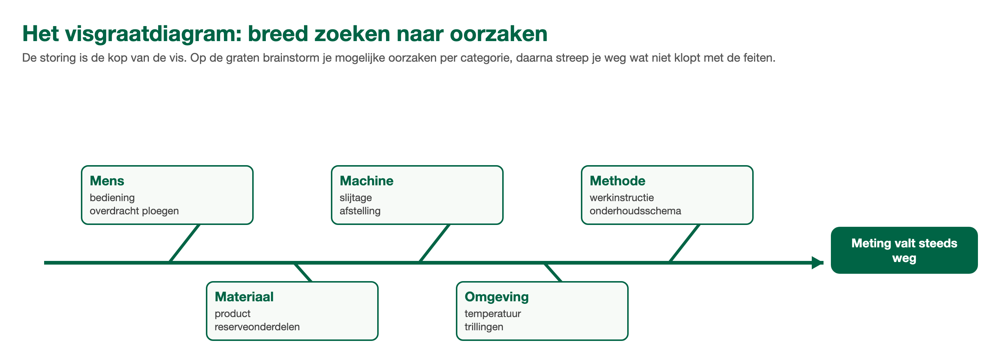

ANA Module 5
3.1 Leerdoelen
Na het volgen van dit hoofdstuk kun je:
- Het verschil uitleggen tussen een symptoom bestrijden en een grondoorzaak wegnemen
- De 5x waarom-methode toepassen op een eenvoudige storing
- Een visgraatdiagram herkennen en uitleggen wanneer je het gebruikt
3.2 Symptoom of grondoorzaak?
Een zekering brandt door. Je vervangt hem, alles doet het weer, klaar. Een week later brandt dezelfde zekering weer door. Nog een keer vervangen? Je voelt al aan: die zekering is niet het probleem. Ergens trekt iets te veel stroom, en zolang dat zo blijft, blijf je zekeringen vervangen.
Dit is het verschil tussen het symptoom (de doorgebrande zekering) en de grondoorzaak (dat wat te veel stroom trekt). Vergelijk het met hoofdpijn: een pijnstiller haalt de pijn weg, maar als de oorzaak te weinig slaap is, komt de hoofdpijn morgen terug. De pil is symptoombestrijding; eerder naar bed is de grondoorzaak aanpakken.
Symptoombestrijding is niet altijd fout. Soms moet de productie door en repareer je eerst het symptoom (stap 3 van het protocol: impact en workaround). Maar dan hoort er altijd een vervolgafspraak bij: wie zoekt wanneer de echte oorzaak uit? Een storing die elke week terugkomt heet een herhaalstoring, en dat is het duidelijkste teken dat er alleen symptomen zijn bestreden.
🔍 Kennischeck: Een zekering brandt elke week opnieuw door en wordt telkens vervangen. Wat is hier aan de hand?
A) De zekeringen zijn van slechte kwaliteit; een ander merk lost dit op
B) Dit is normaal onderhoud: zekeringen zijn nu eenmaal slijtonderdelen
C) Er wordt alleen een symptoom bestreden; iets trekt te veel stroom
D) De monteur plaatst de zekeringen verkeerd, daarom branden ze door
3.3 De 5x waarom-methode
De eenvoudigste manier om van een symptoom naar de grondoorzaak te komen is ook de bekendste: blijf 'waarom?' vragen. Kinderen zijn er wereldkampioen in, en dat is precies de kracht: elke waarom-vraag gaat een laag dieper. Meestal ben je er na ongeveer vijf lagen, vandaar de naam 5x waarom (in veel bedrijven ken je hem als 5 Why's).
📖 Voorbeeld: de pomp die uitviel
1. Waarom viel de pomp uit? De motorbeveiliging schakelde hem uit wegens overbelasting.
2. Waarom raakte de motor overbelast? De pomp moest steeds harder werken.
3. Waarom moest hij harder werken? Het filter voor de pomp zat bijna dicht.
4. Waarom zat het filter bijna dicht? Het is maanden niet vervangen.
5. Waarom is het niet vervangen? Het filter staat niet in het onderhoudsschema.
De grondoorzaak is geen kapotte pomp en geen vol filter, maar een gat in het onderhoudsschema. Los je alleen stap 1 op (pomp resetten), dan sta je hier over een paar weken weer.
Twee tips bij het gebruik:
- Antwoord met feiten, niet met schuldigen. 'Waarom is het filter niet vervangen?' Het antwoord is 'het staat niet in het schema', niet 'omdat Ahmed het vergeten is'. Zoek je een schuldige, dan stopt iedereen met eerlijk antwoorden en vind je de echte oorzaak nooit.
- Vijf is een richtgetal. Soms ben je er na drie vragen, soms heb je er zes nodig. Je bent er als het antwoord iets is wat je kunt veranderen zodat de storing niet meer terugkomt.
🔍 Kennischeck: Wanneer stop je met waarom-vragen stellen bij de 5x waarom-methode?
A) Zodra je uitkomt bij iets dat je zelf kunt veranderen
B) Na precies vijf vragen, want dat is wat de methode voorschrijft
C) Zodra je weet welke persoon de fout heeft gemaakt
D) Zodra het antwoord buiten jouw eigen afdeling ligt
3.4 Het visgraatdiagram: breed kijken
De 5x waarom-methode graaft een gang recht naar beneden. Maar soms weet je nog niet eens in welke richting je moet graven: er zijn meerdere mogelijke oorzaken. Dan helpt het visgraatdiagram (ook wel Ishikawa-diagram, naar de bedenker). Je tekent de storing als de kop van de vis, en op de graten zet je categorieën van mogelijke oorzaken. Veelgebruikte categorieën:
👤 Mens
Bediening, kennis, overdracht tussen ploegen.
⚙️ Machine
Slijtage, defecten, verkeerde afstelling.
📋 Methode
Procedures, werkinstructies, onderhoudsschema.
🧱 Materiaal
Grondstof, product, hulpstoffen, reserveonderdelen.
🌦 Omgeving
Temperatuur, vocht, trillingen, seizoen.
Het visgraatdiagram gebruik je vooral samen: met je ploeg of met de technische dienst brainstorm je per graat welke oorzaken mogelijk zijn, en daarna streep je weg wat niet klopt met de feiten. Wat overblijft onderzoek je verder, bijvoorbeeld met 5x waarom per kandidaat.

Het visgraatdiagram: per categorie brainstormen, daarna wegstrepen wat niet klopt met de feiten.
3.5 Er zijn er meer, en elk bedrijf kiest zelf
5x waarom en het visgraatdiagram zijn de twee die je overal tegenkomt, en voor deze cursus zijn ze genoeg. Weet dat er meer bestaan: grotere bedrijven gebruiken bijvoorbeeld FMEA (Failure Mode and Effect Analysis, een methode die vooraf voorspelt wat er kapot kan gaan) of een eigen bedrijfsmethode voor incidentenonderzoek. Kom je straks op je BPV of in je eerste baan: vraag welke methode het bedrijf gebruikt. De namen verschillen, het idee is altijd hetzelfde: niet stoppen bij het symptoom.
3.6 Samenvatting
✅ Dit neem je mee
- Symptoom bestrijden houdt de fabriek draaiend, grondoorzaak wegnemen houdt de storing weg. Je hebt vaak allebei nodig, in die volgorde en met een vervolgafspraak.
- Herhaalstoringen zijn het teken dat er een grondoorzaak wordt overgeslagen.
- 5x waarom: blijf doorvragen tot je iets vindt dat je kunt veranderen. Feiten, geen schuldigen.
- Visgraatdiagram: breed brainstormen langs mens, machine, methode, materiaal en omgeving, daarna wegstrepen.